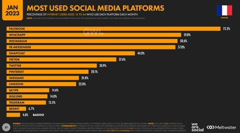
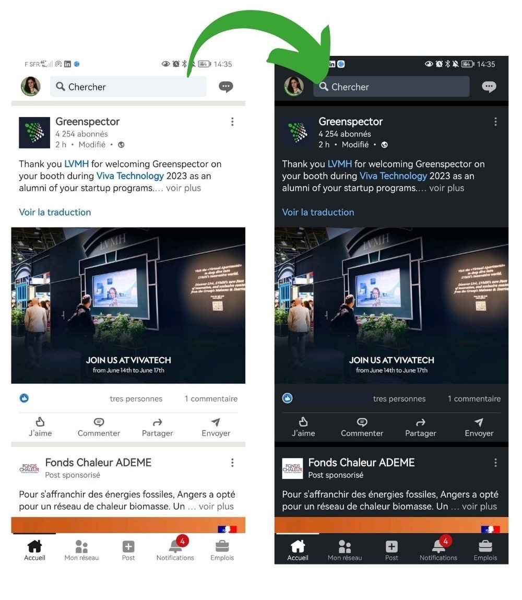

Introduction
The uses and functionalities of social networks are expanding, as are their communities and the time spent on our screens.
Trends, corporate marketing and new channels of influence are all factors that are multiplying user connection and usage time.
We are social’s Digital report France 2023 estimates that 92.6% of French people are connected to the Internet. This represents an increase of +1% compared to 2022, or 600,000 people, over 80.5% of whom are present on social networks.
The environmental impact generated by social networks is evolving with the increase in the number of people and time spent on applications. This implies a greater level of responsibility on these massively used digital services to assess and reduce their generated impacts. Is there an eco-responsible social network in the world? How can we raise the awareness of application publishers, and perhaps even their users? To answer these 2 questions, there’s nothing like a little consumption measurement and impact projection.
As not all these networks work in the same way, we chose to remeasure a use case common to all of them, namely, browsing and reading a news feed from the 10 most popular social network mobile applications in France.
Méthodology
Choice of social networks studied
The 10 most popular social networking applications among the French are: Facebook, Instagram, LinkedIn, Pinterest, Reddit, Snapchat, TikTok, Twitch, Twitter and Youtube. We have used We are social statistics from January 2023 to project environmental impacts.

Given the use case selected, we’ve focused on social networks with a news feed, which excludes messaging applications such as Whatsapp, Messenger, Imessage, Skype, Discord and Telegram. You’ll probably find them in a future article 😉
User path definition
We evolved the user journey by creating a news feed scrolling scenario with the following steps
- Step 1: launch the application
- Step 2: read news feed without scrolling (30 sec)
- Step 3: News feed scrolls with pauses.
- Step 4: application background (30 sec)

This path consists of a 2-second scroll followed by a 1-second read (pause), all repeated and weighted over a 1-minute duration.
Regarding Snapchat, its operation forced us to consider a click and not a scroll scenario, but not calling into question the pause and content scroll times. What’s more, the chosen news feed is the stories page, which is not the application’s home page. In order to have comparable scenarios, the step of accessing the stories page was not measured on this path and therefore not included in the impact generated.
The pauses in scrolling through the news feed simulate the most realistic reading behavior possible.
This path does not transcribe the most frequent uses on these platforms (reading a post or associated rich content, a video, reaction, generated exchange, ….) but it does give us an indication of the level of sobriety of the applications.
For this study, data was measured using our Greenspector Test Runner solution, which enables automated tests to be carried out locally on smartphones.
We measured resource consumption (energy, memory, data) and response times. These data were then used to calculate the environmental impact of the applications.
Please note that the methodology used in this study compares only the scrolling of the most common news feeds. This means that the comparison is not necessarily equivalent, as some news feeds focus on video scrolling and others on multimedia posts (text, image, video, animated gif, etc.).
Measurement context
- Samsung 10, Android 10
- Network: Wi-Fi
- Brightness: 50%.
- Tests carried out over at least 3 iterations to ensure reliability of results
Assumptions used for environmental projections
- User location: 100% France
- Server localization: 100% worldwide (in the absence of information for each application)
- Devices used: 100% smartphone
- Server type: 100% complex
The environmental footprint depends on the location of application servers, their type, the location of users and the type of devices they use. We have decided to study the use of applications only on smartphones and on the share of French users.
Top and flop apps in France according to results
The graph below ranks the various social networking applications according to the environmental footprint of the path we defined above.

The less sober app
Tiktok comes last in the ranking, but that’s no great surprise. In fact, the application is very energy-hungry, consuming 22.4 mAh at launch and exchanging a lot of data as it scrolls through the news feed. This enormous exchange is due in particular to the constantly running video launch and the many advertisements present on the application.
The application preloads a wide range of content, so if the user is offline, he or she can still access the videos. Tiktok loads around 5 MB of data for 30s after launch, equivalent in this test to 10 preloaded videos.
The most sober application
LinkedIn is the least impactful application according to our results. It exchanges a very low volume of data when the application loads, as well as when scrolling through the news feed. The fact that the social network is focused on sharing text-based posts with a low amount of photos and videos explains this score in particular. What’s more, LinkedIn consumes 13.9 mAh of energy, 15% less than the other applications on the panel.
Other applications preload less content, and often less volume. A preloaded video consumes more energy and generates more data exchanges than a preloaded text post.
One-year projection of the impact of the 2 applications most used by the French
According to the We Are Social annual report, the average time spent on social networks is 1h55 per day. When we project the environmental impact over one year for each application, the environmental impact represents 20 to 40 kg eqCO2 depending on the social network. This represents 185km by car for the least sober network.

According to Ademe’s Impact CO2 website, which offers an online converter, approximately 200g CO2eq = 1km. This includes direct emissions, vehicle construction (manufacture, maintenance and end-of-life) and the production and distribution of fuel and electricity. Infrastructure construction (roads, railways, airports, etc.) is not included in this calculation.
We have chosen to compare the 2 applications most used by the French, namely Facebook, which has around 38.1M users, and Instagram, which has around 30.5M users.
The report states that 52 million people in France are present on social networks. Facebook is the most popular social network among 16-64 year-olds (73.3%). If we multiply Facebook’s environmental impact by the number of French users present on this platform (approx. 38.1M), this represents more than 24 tonnes eqCO2/min (or the production of 773 smartphones/min). That’s almost 1M tonnes of eqCO2 per year!
Instagram is the 2nd most popular social network among 16-64 year-olds after Facebook. If we multiply Instagram’s environmental impact by the number of French users present on this platform (58.6%), this represents more than 26.5 tonnes eqCO2/min (or the production of 853 smartphones/min). That’s over 1.1M tonnes of eqCO2 per year!
We can see that despite a gap of almost 8 million users, Instagram has a greater carbon impact than Facebook.
It’s worth pointing out that the amount of time devoted to social networking varies according to the audience concerned. Some people spend less time on them, while others spend considerably more, sometimes up to 8 hours a day.
The table below projects the carbon impact in terms of uptime.

What about international projection?
With an average time spent on social networks of 2 hours and 31 minutes across all networks, we estimate the consumption of these applications worldwide.
Facebook has 2.958 billion users worldwide, making it once again the most popular network. The daily consumption of a user spending an average of 2h31 on this network would be around 95g eqCO2. For the almost 3 billion Facebook users who spend an average of 2h31 a day on this social network, the platform would have an environmental footprint of more than 281,000 tonnes eqCO2/day, or more than 102 million tonnes eqCO2 a year!
Internationally, Instagram has around 2 billion users. Per day, the consumption of a user spending 2h31 on Instagram would produce around 132g eqCO2. On the scale of 2 billion users, this would represent 262,000 tonnes eqCO2/day, or almost 96 million tonnes per year.
And what happens if we use a dark theme?
We carried out our measurements a second time with the applications in dark mode, so as to be able to compare the energy impacts generated.
The measurements were carried out on a Samsung S10, equipped with AMOLED technology, known for the fact that a dark pixel is actually a partially extinguished pixel, which explains why dark modes reduce power consumption. Conversely, when the screen uses LCD technology, color has no influence on consumption, which explains why dark mode is no more energy-efficient than light mode, see article here.

Nowadays, more and more phones are equipped with AMOLED screen technology, and it’s worth activating the dark mode to reduce power consumption and preserve battery discharge.
In this study, we noticed that only 8 of the 10 applications studied offered dark mode. Snapchat and Tiktok didn’t, so we excluded them from the measurements. As their interface is based on scrolling videos and photos only, only a few pages such as messaging would lower the energy consumption measurement.
[table “70” not found /]It can be seen that activating the dark mode reduces the energy consumption measured on the battery.
We can see that when dark mode is activated on the application, energy consumption is reduced by an average of 20%, and the rate of battery discharge is therefore reduced by an average of 18%, relative to their equivalents in light mode.
On text-heavy applications such as Twitter, LinkedIn and Facebook, dark mode is more energy-efficient, as it inverts the colors of a block of text, turning it into fine white writing on a black background. On the other hand, images and videos will not have their colors inverted, so there will be little difference when displaying multimedia content.

Conclusion
In this study, we observe that the GHG impact is around twice as great between the most and least impacting platforms.
Applications with a lot of multimedia content consume a lot of energy and require a lot of data exchange over the network to display this content. Text-based content, on the other hand, is much easier to load and consumes much less energy.
In conclusion, although social networks facilitate the exchange and accessibility of information, they are not as totally virtual as we might think, and raise the question of our relationship to the consumption of these applications. Are we really using them to communicate and inform ourselves, or rather to feed on a barrage of information and content that is generally neither desired nor expected?
At a time when climate change is a matter of urgency, it’s time to examine our relationship with our screens and adopt eco-friendly gestures, such as reducing time spent online and activating dark mode on mobile applications.
If you’re an application publisher, you also have a role to play! Here are a few ways in which you can reduce your impact:
- Default to dark mode when downloading the application
- Avoid massive pre-loading of heavy content
- Avoid auto-starting videos or auto-re-launching at the end of videos
Sources
For social network usage statistics :
https://wearesocial.com/fr/blog/2023/02/digital-report-france-2023-%f0%9f%87%ab%f0%9f%87%b7/
For equivalents in terms of carbon impact :
Discover our Solutions Show More Show Less